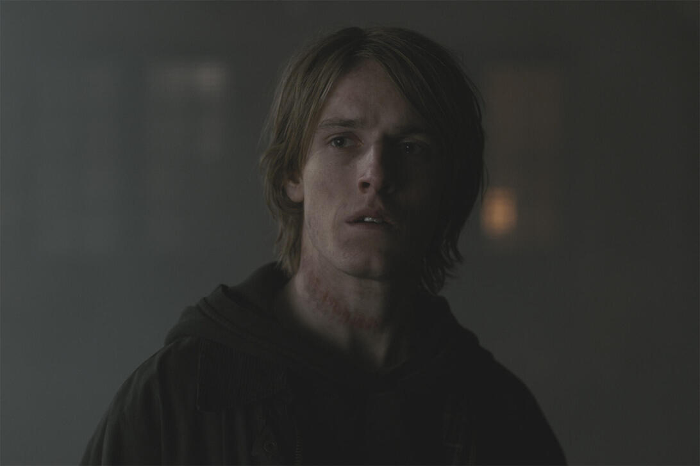
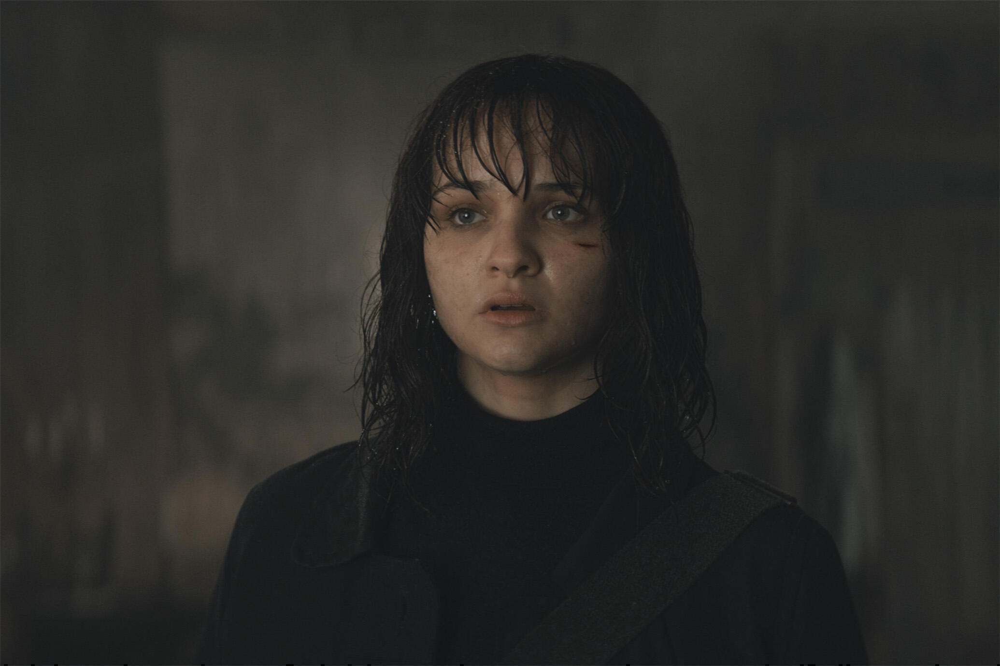
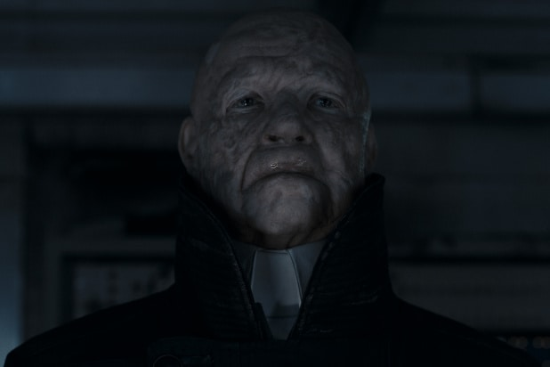
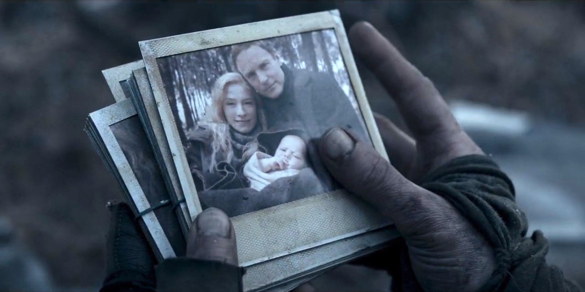
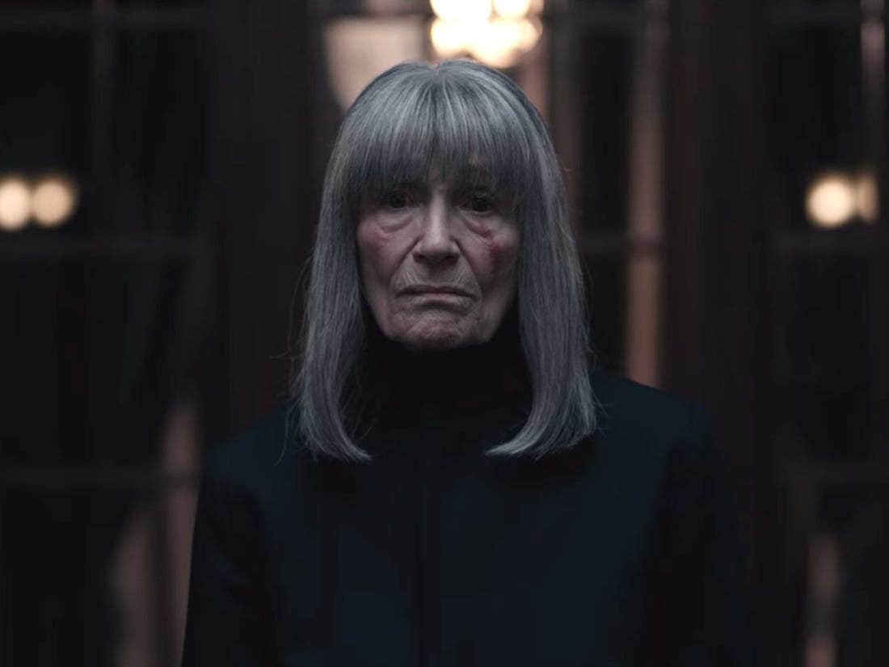
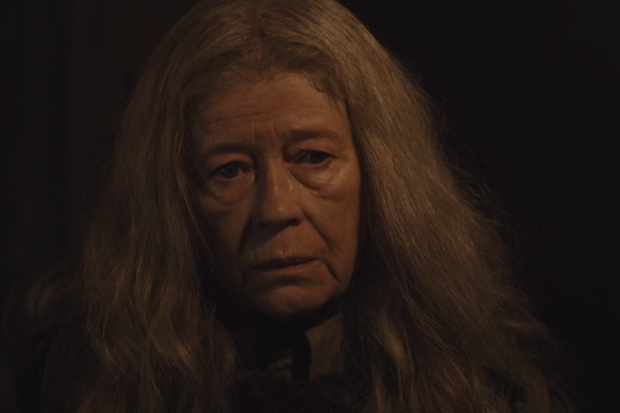
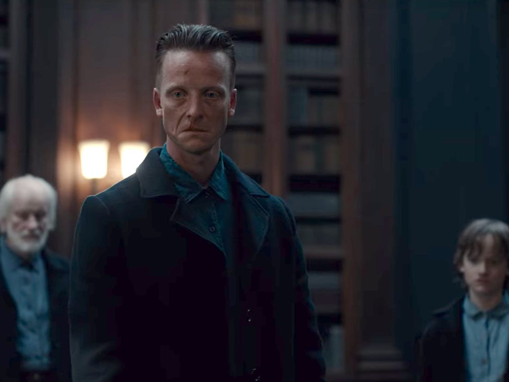
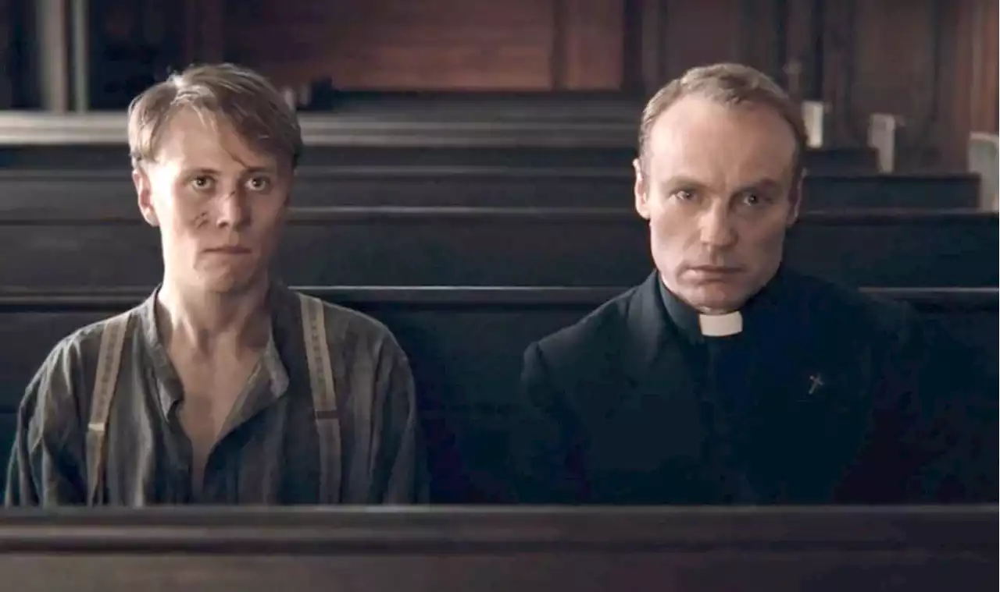
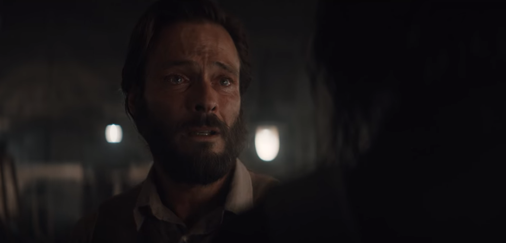

Season 3
"And if you gaze long into an abyss, the abyss also gazes into you." Friedrich Nietzsche
Watch DARK on Netflix Join the fan club!

Jonas Kahnwald
After Martha dies in Jonas' arms, quantum entanglement creates 3 different branches of reality: where Jonas travels with Alt Martha to Eva's world, where Jonas survives the apocalypse in his basement, and where Adam takes Jonas to a 3rd world. In the reality where Alt Martha takes Jonas to her world, he discovers that this Martha is from a paralell reality where Mikkel never travels through time, therefore Jonas never exists in this reality. Jonas then meets Eva and realizes that she is Alt Martha aged 60 years. Alt Martha and Jonas set out to stop the apocalypse in Alt Martha's world, and her and Jonas sleep together. When confronting Eva at Erit Lux headquarters, Eva informs Jonas he has fufilled his purpose and a different Alt Martha kills him. In the reality where Jonas saves himself, he joins forces with Claudia in post-apocalyptic Winden and works for years to stabilize the time portal. Finally in 2052, now grown to be adult Jonas or The Stranger, the portal is stable and Jonas is able to travel back in time. In the reality where Adam takes Jonas, they arrive in Eva's world in 2019 where Adam explains the only hope is to travel with Alt Martha to the origin world and prevent the clockmaker from making the time travel machine that creates Adam and Eva's paralell worlds. They do so by traveling to the origin world and saving the clockmaker's family so he never builds the machine. Jonas and Martha hold hands as they watch each other dissappear into particles as their respective paralell worlds are erased.

Alt Martha Nielsen
Martha from Eva's world. On the evening of November 4th 2019 she meets a boy who acts like he knows her. Its Jonas. After she makes it clear she does not know him, Jonas disappears. A few days later and after multiple strange occurences Alt Martha and Jonas meet again and this time he earns her trust. They travel through the cave passage to 2052 where Winden is a post-apocalyptic desert. An adult Alt Martha appears and tells the pair the apocalypse is in 2 days back in her present time and they can stop it if they prevent the yellow barrels from ever being opened. They return to 2019 and sleep together. Jonas takes Alt Martha to Erit Lux to confront Eva where then a slightly older Alt Martha with a large scar on her face appears and kills Jonas. On her way to the nuclear powerplane--still trying to stop the apocalypse--Alt Martha is met by adult Magnus and Franziska who convince her to join Adam's Sic Mundus by telling her she will save Jonas that way. Here, quantum entanglement creates 3 different branches of reality: where Alt Martha travels to Jonas in Adam's world and saves him from the apocalypse, where Bartosz prevents her from joinng them, and where Jonas appears and takes her to the origin world. In the reality where Alt Martha saves Jonas, she dropps him off in 2020 in Eva's world, then travels to 1888 where she gives adult Jonas the black matter he needs for a new portal. Martha goes back to Adam in 2053 who kills her and her unborn child. In the reality where Bartosz stops her, they travel to Erit Lux in 2052 where Eva is waiting for them. Eva gives her a large deep cut on her face, insisting she will understand later. Alt Martha meets The Unknown--her and Jonas' son-- and Eva explains that the only way her son will survive is if the knot is preserved. Alt Martha is then the one to kill Jonas.

Adam
In 1911, a young-ish Adam suddenly finds his mother Hannah with his young half-sister Silja. Adam suffocates his mother in her sleep and sends Silja into the future. For Adam's plan to work everything must continue happening as it always has, so Adam travels to the time of the Apocalypse and kills Martha. Adam now manages Sic Mundus from his base in 2053 with Magnus, Franziska, Silja, Charlotte, Agnes, and Elisabeth where they time travel to ensure that the course of events is preserved. Alt Martha even joins. Knowing Alt Martha is pregnant with the origin of the time traveler family tree, Adam uses the energy of the portal to kill Alt Martha and her unborn child believing that will destroy the knot and end his existence but it doesn't work. Old Claudia shows up and explains that due to quantum entanglement and Eva's organization (working in opposition to Adam), there is a second pregnant Alt Martha who gives birth and preserves the knot. Old Claudia then explains the only way Adam can break the cycle is by changing things in the third world AKA the origin world. Adam explains his plan to Jonas and sends him and Alt Martha to the future. Adam goes to find Eva, and while she expected him to kill her, he takes her hand instead and they wait together for whatever comes next.

Elisabeth Doppler
In post-apocalyptic Winden, Elisabeth lives with her dad Peter in a trailer. Peter is killed by a burglar, and a distraught Elisabeth goes to the Winden caves where young Noah finds her where they then live together. They uncover a door enscribed with "Sic Mundus Creatus Est", and Noah works for Adam. In 2041, Noah and Elisabeth have a child together named Charlotte who is kidnapped as a baby. Noah promises Elisabeth that he will find their daughter, travels in time, and never returns to Elisabeth. In 2053, Charlotte is transported through the riff in time to discover that Charlotte is Elisabeth's missing child. Charlotte and Elisabeth's existence thus become a bootstrap paradox, as Elisabeth is the daughter of her own daughter, and Charlotte is the mother of her own mother. Elisabeth joins forces with Adam who instructs her and Charlotte to travel back to 2041 and kidnap Elisabeth's child and bring it to 1971 where the child will grow up to be Charlotte, and the time loop will be preserved.

Eva
By the age of 80, Alt Martha goes by the name Eva. She is the leader of Erit Lux which like Sic Mundus is fighting to control time travel. Unlike Sic Mundus, Eva wants to maintain and preserve the knot in time rather than destroy it. When Jonas first comes to her world she asks him to share the secret of time travel with Alt Martha, but she mainly wants him to create the origin with Alt Martha. Shortly after he sleeps with Alt Martha, Eva has him killed. As the apocalypse draws near, Eva has members of Erit Lux (Claudia, Bartosz, Noah) travel through time ensuring everyone is where they need to be to preserve the knot. Adam finds Eva in Erit Lux and having seen Eva's body as a young woman, Eva expects him to kill her. But quantum entanglement has created an alternate reality, and instead of killing her, Adam takes Eva's hand and they watch her world slowly disappear together.

Claudia Tiedemann
In the months following the apocalypse, Claudia lives with her daughter Regina who soon dies. A few days later Claudia is visited by Alt Claudia who convinces her to join Eva's fight against Adam, and gives her a notebook with all the information she needs to know. Now a secret follower of Eva's Erit Lux, Claudia gains Jonas' trust when she agrees to help Jonas stabilize the God particle to create another time portal. Noah, Jonas, and Claudia spend decades trying to make a stable portal. However Eva urged Claudia to slow her work without growing suspicion. Evenually Claudia realizes neither Adam nor Eva have plans to save Regina, so Claudia kills Alt Claudia and impersonates her alt self to infiltrate Erit Lux. Later in 2053 she visits Adam after he kills Alt Martha and explains why his plan didn't work. Claudia also tells Adam about the existence of the origin world and how he needs to get Alt Martha and Jonas to travel there and prevent the timeline from splitting in the first place. Claudia does this because the origin world is the only world where Regina doesn't get cancer.

The Unknown
With a striking cleft lip, this figure is almost always seen in a set of 3: a young boy, an adult, and an elderly man. They are Jonas and Alt Martha's son, the origin of the time traveler family tree loop, and the center of the knot in time. They are responsible for multiple ruthless and strategetic deaths throughout time. The Unknown is the author of the notebook that details all of the travel and mysterious occurences in Winden. On June 21st 1986, The Unknown synchronously break into the nuclear power plant as an adult in Adam's world and a boy and elderly man in Eva's world. They simultaniously open a valve that creates the incident in 1986 that makes the nuclear waste later stored in the yellow barrels, as well as the God particle which is responsible for the apocalypse in both worlds.

Noah
Noah is the son of Bartosz Tiedemann and Silja. He was given the name Hanno by his parents and his mother died during the birth of his sister Agnes. At the age of 17, Noah kills his father. In post-apocalyptic 2021 Winden, after Peter Doppler dies Noah takes Elisabeth under his wing. Noah spends decades with Jonas and Claudia to stabilize the time travel portal in the power plant. Adult Noah and adult Elisabeth have a daughter together in 2041--Charlotte. Charlotte is kidnapped as a baby and Noah believes Claudia and Jonas are behind it. Noah searches time and travels, completing tasks from Adam that he claims will help him find his daughter Charlotte until he is killed.
